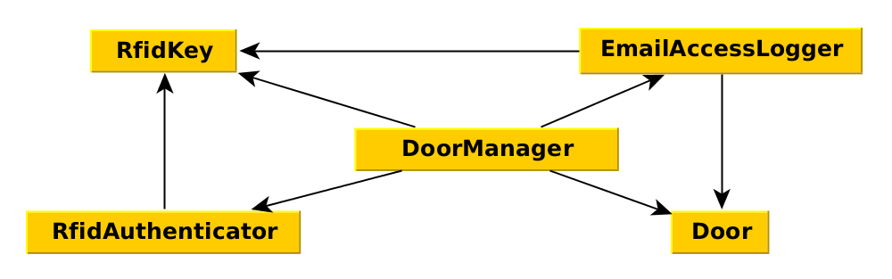

Темы на сегодня:
- Зависимости
- Dependency Injection (DI)
- Dependency Injection Container (DIC)
- Service Locator
- Использование DI в Yii
Будет очень много кода
Зависимости
Класс A
зависит от
класса B

Просто, как двери
Кнопка открывает двери
class DoorManager
{
public function open()
{
$door = new Door();
return $door->open();
}
}
public function actionOpen()
{
$doorManager = new DoorManager();
return $doorManager->open();
}
DoorManager зависит от Door
Связи:

- High Cohesion
- Low Coupling
Кнопка — неактуально!
Выдать всем RFID и сделать логирование!
... и еще лампочку-индикатор поставить.
Fuuu картинка
class DoorManager
{
public function open(RfidKey $rfid)
{
$door = new Door();
$indicator = new LightIndicator($door);
$log = new EmailAccessLogger('alert@superdoors.com');
$auth = new RfidAuthenticator($rfid, [
'users' => User::find()->where(['active' => 1])->all()
]);
if ($auth->canOpenDoor($door)) {
$log->accessGranted($door, $rfid);
$door->open();
return $indicator->granted();
} else {
$log->accessDenied($door, $rfid);
return $indicator->denied();
}
}
}
Создано множество зависимостей

Win:
|
Lose:
|
Ах да, двери нужно еще уметь закрывать...
Бизнес всегда порождает боль новые требования
Плохой код порождает боль
Эволюция управления зависимостями
Инициализация в конструкторах
class DoorManager {
private $door; // key, indicator, auth, log
public function __construct(RfidKey $key) {
$this->key = $key;
$this->door = new Door();
$this->log = new EmailAccessLogger('alert@superdoors.com');
$this->indicator = new SoundIndicator();
$this->auth = new RfidAuthenticator($this->key, [
'users' => Users::find()->where(['active' => 1])->all()
]);
}
public function open() {
if ($this->auth->canOpenDoor($this->door)) {
$this->door->open();
$this->indicator->granted();
} else {
$this->indicator->denied();
}
}
public function close() { } // implementation
}
Win:
|
Lose:
|
Часть дверей работает переводится на магнитные замки.
Протокол управления отличается.
Возможные решения:
- добавить
ifвнутри объектаDoor() - добавить
ifперед созданием объектаDoor() - разделить проект на две ветки:
masterиmagnet-door-master - написать
MagnetDoorManager
Нужна инверсия управления!
Inversion of Control — принцип объектно-ориентированного программирования, используемый для уменьшения связанности в компьютерных программах
Идеи:
- Модули верхнего уровня не зависят от модулей нижнего уровня — и те, и другие зависят от абстракций
- Абстракции не зависят от деталей — детали зависят от абстракций
Создаём интерфейсы
interface DoorInterface {
public function open();
public function close();
}
class Door implements DoorInterface {
public function open() { } // implementation
public function close() { } // implementation
}
class MagnetDoor implements DoorInterface {
public function open() { } // implementation
public function close() { } // implementation
}
class FakeDoor implements DoorInterface { // for testing purpose
public function open() { return true; }
public function close() { return true; }
}
Делаем фабрики
abstract class AbstractDoorFactory
{
/** @return DoorInterface */
abstract public function build();
}
class DoorFactory extends AbstractDoorFactory
{
public function build() {
return new Door();
}
}
class MagnetDoorFactory extends AbstractDoorFactory
{
public function build() {
return new MagnetDoor();
}
}
Изменяем конструктор
class DoorManager {
private $door; // key, indicator, auth, log
public function __construct(DoorInterface $door, RfidKey $key) {
$this->door = $door;
$this->key = $key;
$this->indicator = new SoundIndicator();
$this->log = new EmailAccessLogger('alert@superdoors.com');
$this->auth = new RfidAuthenticator($this->key, [
'users' => Users::find()->where(['active' => 1])->all()
]);
}
}
public function actionOpen()
{
$key = $this->getKey(); // implemented somehow
$door = (new MagnetDoorFactory())->build();
$doorManager = new DoorManager($door, $key);
return $doorManager->open();
}
Win:
|
Lose:
|
Dependency Injection — это набор практик, который помогает строить приложения с низким уровнем связанности между компонентами.
это НЕ только:
|
это:
|
Варианты DI
DI через сеттеры
class DoorManager {
private $door;
private $key;
private $indicator;
private $auth;
private $log;
public function __construct(DoorInterface $door) { }
public function setKey(KeyInterface $key) { }
public function setIndicator(IndicatorInterface $indicator) { }
public function setAuth(AuthManagerInterface $auth) { }
public function setLog(LoggerInterface $log) { }
}
public function actionOpen()
{
$door = $this->getDoor();
$doorManager = new DoorManager($door);
$doorManager->setKey($this->getKey());
// ...
return $doorManager->open();
}
Win:
|
Lose:
|
Tip:
|
|
class DoorManager {
private $door; // key, indicator, auth, log
public function __construct(
KeyInterface $key, DoorInterface $door,
AuthManagerInterface $auth, LoggerInterface $log,
IndicatorInterface $indicator
) {
$this->door = $door; // key, auth, log, indicator
}
}
public function actionOpen()
{
$doorManager = new DoorManager($key);
return $doorManager->open();
}
Вопросы?
 |